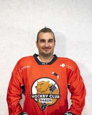
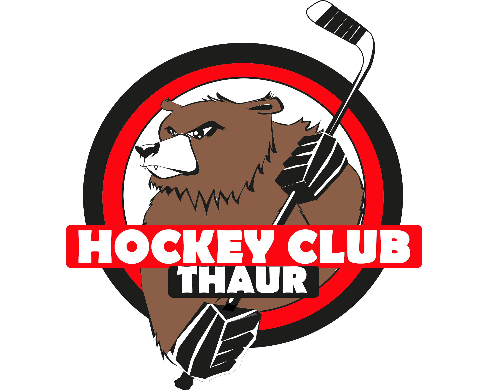
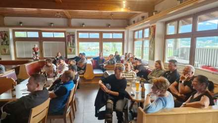
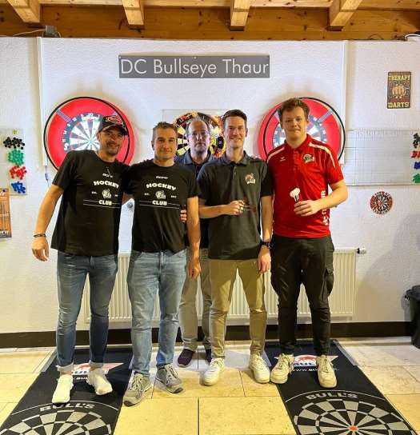
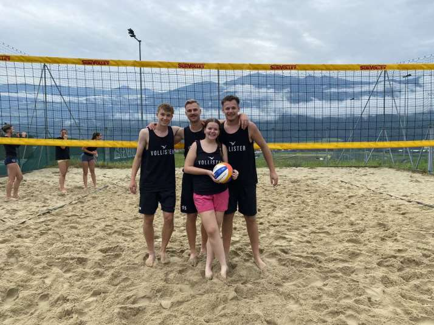
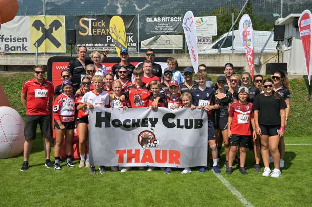
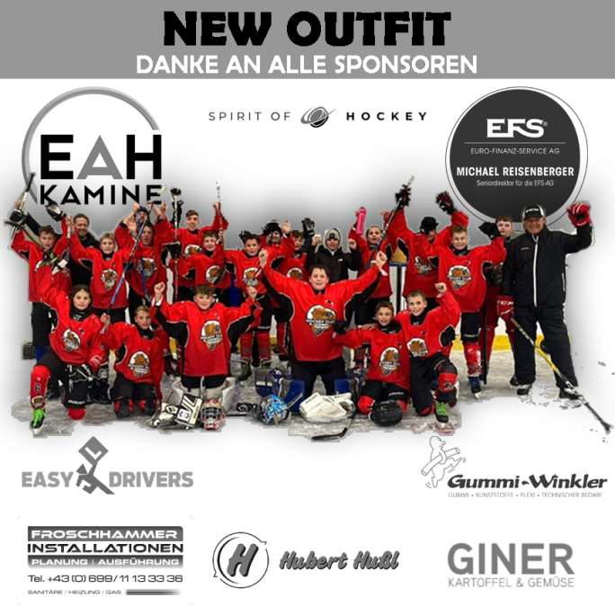
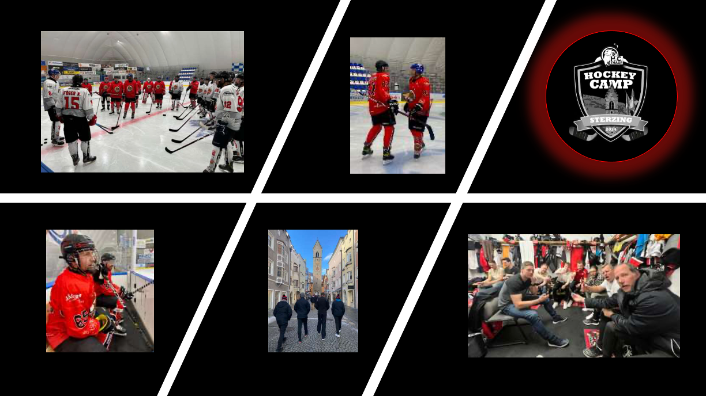
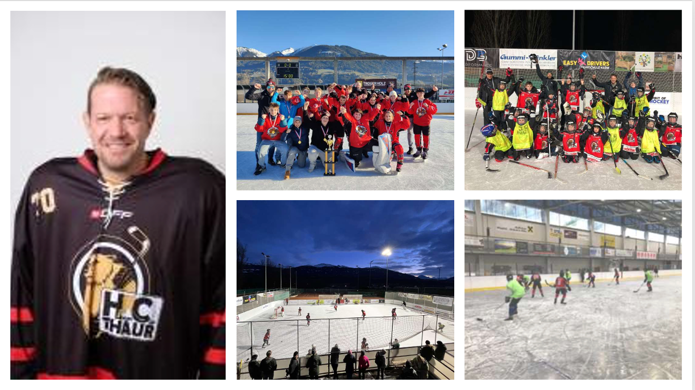
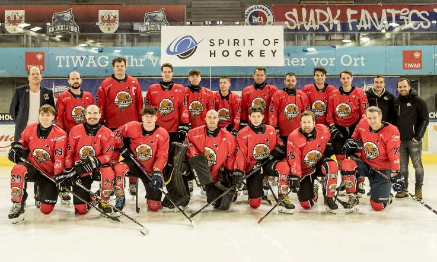

JAHRESRÜCKBLICK 2024/25 Ausgabe 8

Mario Föger, Obmann
Mit großer Freude präsentiere ich euch unser Jahresvereinsheft für die Saison 2024/25. Dieses Heft ist nicht nur ein Rückblick auf die vergangenen Monate, sondern auch ein Ausdruck unserer gemeinsamen Leidenschaft für den Eishockeysport und die Gemeinschaft, die wir in unserem Verein aufgebaut haben. In diesem Jahr dürfen wir stolz auf 55 aktive erwachsene Spieler und 53 engagierte Nachwuchsspieler blicken. Diese Zahlen sind nicht nur beeindruckend, sie spiegeln auch die Begeisterung und die Vitalität unseres Vereins wider. Es ist inspirierend zu sehen, wie sich unsere Spieler, sowohl jung als auch alt, mit vollem Einsatz und Hingabe dem Eishockeysport und dem Verein widmen.
Die vergangenen Monate waren geprägt von intensiven Trainingseinheiten, spannenden Spielen und unvergesslichen Momenten auf und neben dem Eis. Ein herzliches Dankeschön gilt unseren Trainern, Betreuern und allen ehrenamtlichen Helfern, die unermüdlich daran arbeiten, unseren Verein zu unterstützen. Ich möchte mich auch bei unseren Sponsorpartnern und Unterstützern für die finanziellen und materiellen Stützen herzlichst bedanken, sowie bei der Gemeinde Thaur und den Nachbarvereinen SV und TC Thaur.
Viel Spaß beim Lesen des Jahreshefts und auf eine spannende kommende Saison! In diesem Sinne wünsche ich allen einen schönen Sommer und auf ein Wiedersehen bei den Sommerevents und auf dem Eis im Oktober!
VORSTAND 2024/25 Mario FÖGER (Obmann) - Nikolaus CHRISTLER (Obmann-Stv.)
Daniel SCHREINER (Kassier) - Wolfgang WINKLER (Kassier-Stv.)
Michael PLANK (Schriftführer) - Martin FELDERER (Schriftführer-Stv.)
Lukas CHRISTLER (Sportlicher Leiter)
Gabriel THALER (Nachwuchsleiter) - Christoph BREUER (Nachwuchsleiter-Stv.)
Michael JÄGER - Christian PLATTNER
Markus SCHLINKE - Joachim STEINLECHNER (Beiräte)

Das HC Thaur Embleme samt Bär erhielt Mitte des Jahres ein neues Aussehen! Das Logo wurde modernisiert und wird ab sofort in roter als auch schwarzer Ausführung verwendet. Dennoch verschwindet das ursprüngliche Vereinszeichen nicht zur Gänze. Auf sämtlichen bestehenden Drucksorten, Textilien, etc. ist der Bär in alter Form zu finden. Auf den neu entworfenen Jerseys wurde das Logo 2024 erstmals gedruckt!
Am 22. Mai fand die fünfte Generalversammlung des Hockeyclubs statt. Im Beisein von 39 Mitgliedern fand ein Jahresrückblick, der Kassabericht sowie ein Ausblick auf die neue Saison statt. Bürgermeister Ing. Martin Plank richtete dankende Worte an den Vorstand für die geleistete Vereinsarbeit! Im Anschluss an die Generalversammlung wurden alle Mitglieder mit Schnitzel und Kartoffelsalat verköstigt.


Mitte März nahm der Hockey Club Thaur beim Dart-Dorfturnier des Dart Clubs Bulls Eye Thaur statt. Platz zwei am Vorrundentag brachte unser Team in das A-Finale am Samstag. Schlussendlich belegte der HC Thaur Platz 5 des Dorfturniers. Wir gratulieren dem Dartclub rund um Christian Nagl für die toll organisierte Veranstaltung!
Im August stand unser Beachvolleyballteam bestehend aus Sophie und Luggi Christler, Matteo Wöber und Marco Müller wieder am Sandplatz des Beachvolleyplatzes in Thaur. Beim Turnier der Jugendgruppe Regenbogen war heuer im Halbfinale Endstation.


Am 31. August lief auch der HC Thaur wieder für den guten Zweck beim 5. Herzlaufs Tirol am Sportplatz Thaur mit. Mit 39 LäuferInnen stellten wir wieder eines der größten Teams dieses Cahrtiy-Laufevents. Der SV Thaur übergab eine Spende über 25.000€ an die Organisation Herzkinder Österreich. Danke an alle HCT-TeilnehmerInnen!

Das Projekt neue Trikots startete bereits im März mit den ersten Gesprächen beim Verkäufer der Trikots, Spirit of Hockey. Nachdem nach mehreren Sitzung das Design fixiert wurde, kümmerte man sich um die Finanzierung. Zusätzlich zum Kostenbeitrag des Vereins, konnten zahlreiche Sponsoren für dieses Projekt gewonnen werden. Somit stand Ende Juli das Design inkl. Sponsoren endgültig fest. Die Produktion konnte gestartet werden. Anfang November fand im Zuge eines Fotoshootings die Vergabe der weißen und roten Trikots samt dazu passender Stutzen an die aktiven Mitglieder statt. Für die Spiele stehen unserem Team rote, designte Überziehhosen bereit. Unsere Junior-Mannschaft erhielt rote Trikots mit Namen, sowie Stutzen.
In Summe wurden 55 aktive Mitglieder im Erwachsenenbereich, sowie 35 Kinder neu ausgestattet. Die Trikots bleiben im Besitz des Vereins und werden leihweise den Mitgliedern auf die Dauer ihrer aktiven Zeit zur Verfügung gestellt. Ein großes Dankeschön geht an alle finanziellen Unterstützern der neuen HC Thaur Bekleidung!

Wie jedes Jahr im November schlugen wir auch heuer wieder unsere Zelte in Südtirol auf. Dieses Mal ging die Trainingslagerfahrt nach Sterzing. Im fußläufig erreichbaren Hotel Rosskopf nächtigen unsere 26 Mitglieder. Bereits am Freitag ging es erstmals aufs Eis in der Traglufthalle in Sterzing. Von außen recht unscheinbar wirkend, bietet die Halle eine großzügige Atmosphäre mit einer top Beleuchtung im Inneren. Wie schon gewohnt bezogen wir die Kabine für die nächsten drei Tage. Nach der ersten Einheit wurden wir im Hotel mit einem 4gängigen Menü bestens verköstigt. Zwei weitere Einheiten folgten am Samstag, ehe man am Sonntag nach dem Vormittagstraining wieder über den Brenner retourreiste. Wie schon die Jahre zuvor kann man von einem sportlich wie auch gesellschaftlich grandiosen Trainingslager 2024 sprechen.
Meine 7. Saison als Nachwuchsleiter war eine sehr schöne, interessante, intensive und herausfordernde Saison. Leider mussten wir schon vor Saisonstart unseren Trainer Lukas verletzungsbedingt vorgeben (Gute Besserung - comeback stronger next saison), aber trotzdem blieben wir bei unserer Entscheidung neben unseren Junior-Bären eine neue Gruppe ins Leben zu rufen, nämlich unsere Mini-Bären (5 - 10 Jahre). Die Anmeldungen für die Minis waren anfänglich überschaubar, aber zum Saisonstart am 18.12.2025 zählten wir dann doch 27 Kids (davon 1 Mädl), die den Eislaufplatz erstmals in Thaur stürmten.
Die Junior-Bären starteten bereits am 10.11.2024 in der Eishalle Steinach in die Saison und hatten insgesamt 17 Eiseinheiten. Auch heuer fand wieder die Turnierserie mit Steinach, Mils und Volders statt, an denen wir sehr erfolgreich mit zwei Teams teilnahmen und alle drei Turniere nach knappen Partien für uns entscheiden konnten. Ein Highlight der Saison war sicher wieder der Besuch eines HCI-Spieles Ende Dezember 2024, wo wir mit ca. 40 Kindern die TIWAG-Arena stürmten.


Das vergangene Vereinsjahr war für den Hockey Club Thaur eines der aufregendsten und ereignisreichsten Kapitel in der achtjährigen Vereinsgeschichte. 14 Spiele fanden heuer im Rahmen der tirolweiten Hobbyliga, dem Hockey Cup Tirol, statt. Mit Optimismus ging man in die zweite Saison dieser Liga. Die Teilnahme ermöglichte dem Verein den Vergleich mit anderen Mannschaften und man konnte wertvoller Erfahrungen für die weiteren Jahre sammeln. 23 der aktiven Erwachsenen beteiligten sich an diesem Meisterschaftsbetrieb.
In der Division 2 dieses Cups traf der Hockey Club Thaur jeweils mit Hin- und Rückspiel auf die Mannschaften aus Volders, Aschau, Strass, Sellraintal und den Tyrolean Ice Kings. Nach zehn Runden des Grunddurchgangs stand das Team aus Thaur punktegleich an der unglaublichen zweiten Stelle der Tabelle. Der Modus dieser Liga führte den Hockey Club Thaur dann in die Halbfinal-Playoffs-Serie gegen den EC Sellraintal. Der Sieger aus maximal drei Begegnungen zog ins Finale ein. Leider musste sich das Team rund um Trainer Nikolaus Christler im entscheidenden dritten Spiel knapp geschlagen geben. Anfang März fand der Finaltag des Cups statt, an dem der Hockey Club Thaur im Spiel um Platz 3 gegen den Verein aus Volders in der Verlängerung mit 4:5 verlor und somit die Saison als Vierter abschloss. Trotz dieser knappen Niederlage kann man auf eine erfolgreiche und tolle Saison im Verein zurückblicken.